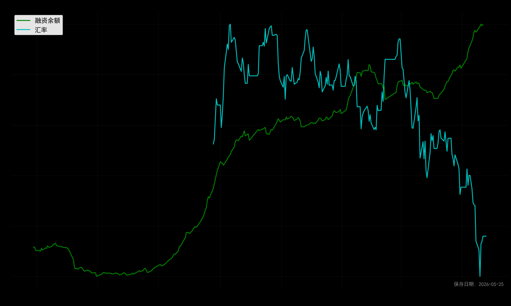
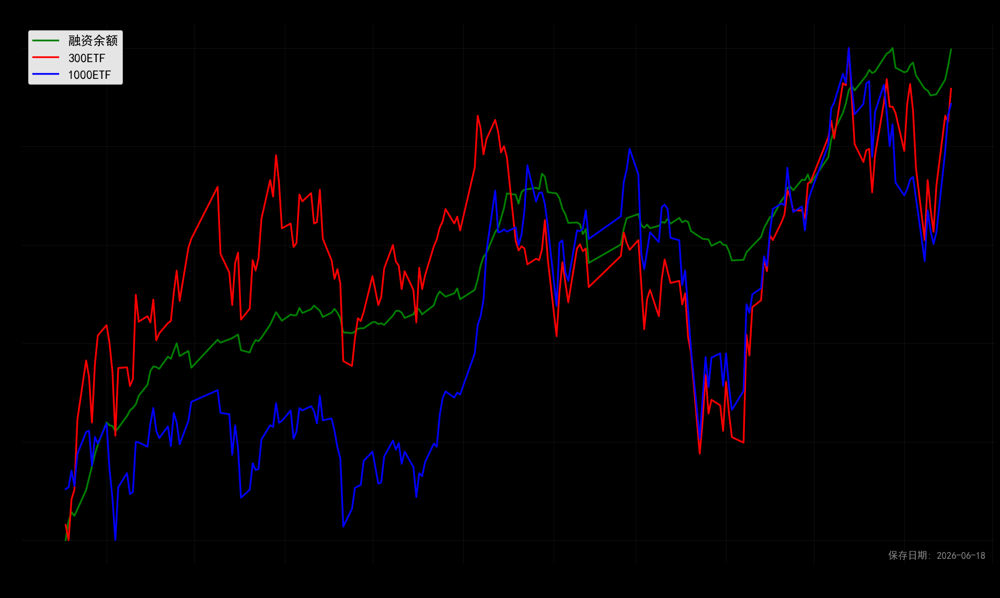
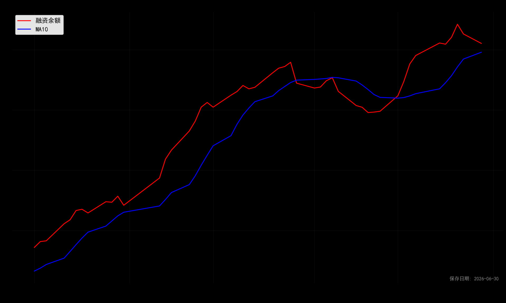
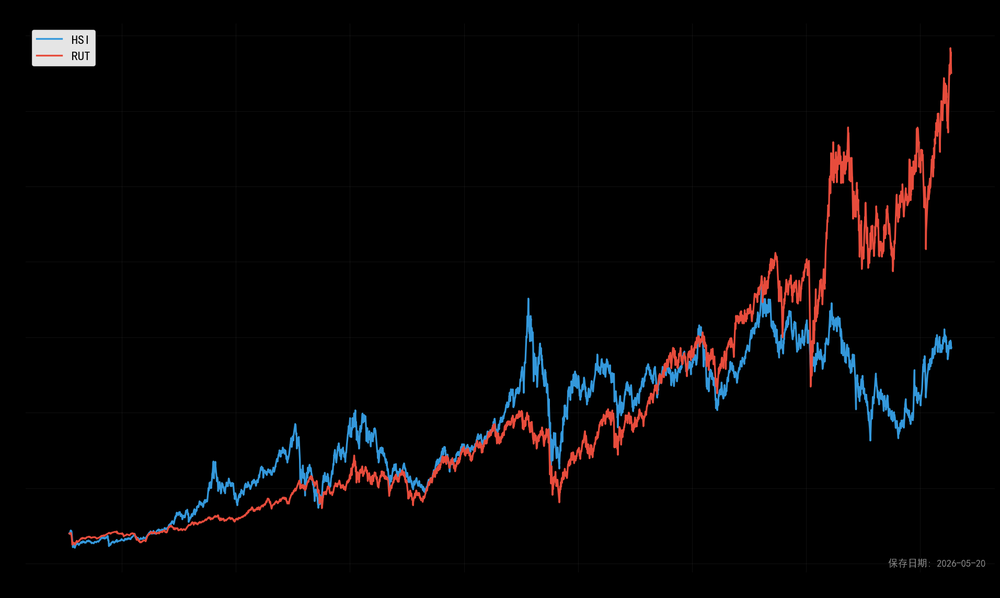
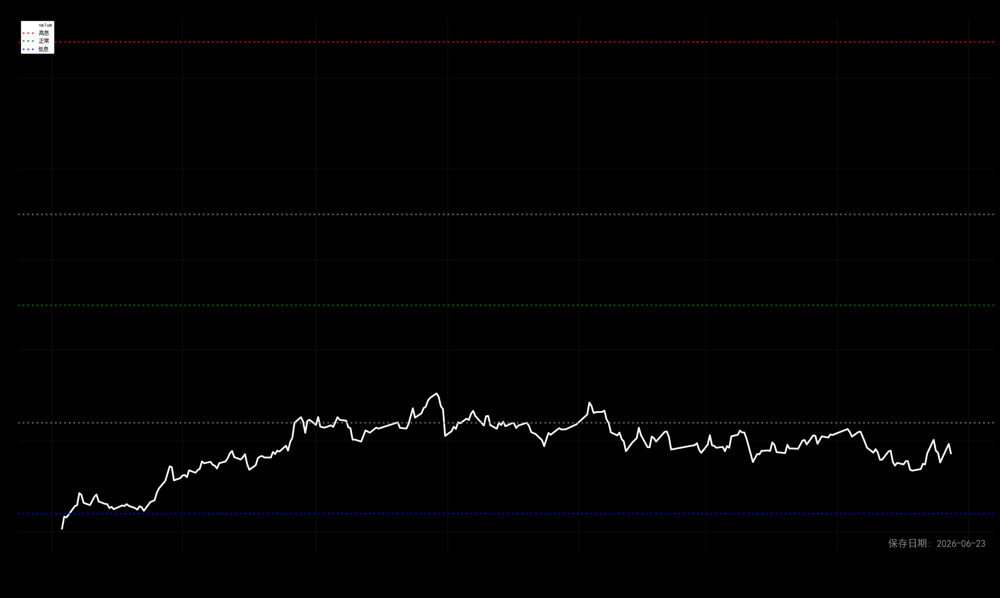
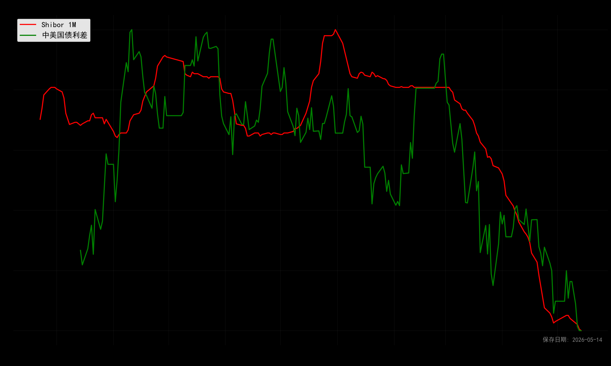
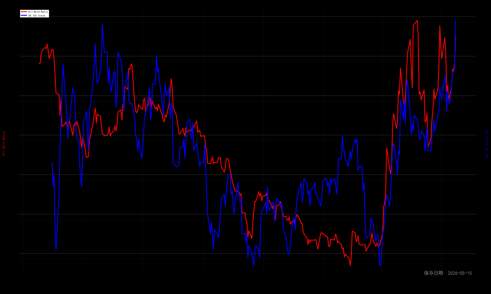

📅 今日报告
今日A股新闻分类摘要
数据时段：2026-07-01 生成时间：2024-05-23 10:30 (示例时间)
| 新闻分类 | 事件摘要 |
|---|---|
| 地缘 | 美国解除对 Anthropic 关键 AI 模型的出口管制；美科技“七巨头”6月单月跌幅创年内最差；美伊在多哈进行间接技术性会谈推进临时协议；日本及中国青海发生中等强度地震；中国黄金集团拿下新疆铜矿探矿权，国家航天局建立近地小行星监测体系；谷歌发布多模态 AI 模型 Gemini Omni Flash 及 Nano Banana 2 Lite；以色列总理内塔尼亚胡表示希望停止接受美国援助 |
| 周期行业 | 日本制造业景气信心升至 2018 年以来新高；美国铝业以 41 亿美元收购 South32 铝土矿等资产；猪肉概念板块走强，金新农涨停；玻纤板块震荡走弱，卓郎智能跌停；武山铜矿三期扩建安全验收成功，中曼石油在新疆成立能源新公司 |
| A股股市 | 上证指数上涨 0.44% 收报 4112.45 点，市场分化且两市成交额突破 3.6 万亿元；上期所调整黄金等期货合约涨跌停板幅度及保证金比例；中基协对头部量化私募进行“摸底”调查；腾讯控股 6 月 30 日回购约 5 亿港元股份；25 只 A 股股权登记分红，*ST 宝实撤销退市风险警示并复牌；金山办公计划优化 WPS C 盘占用问题 |
| 其他行业 | 康泰医学三项医疗器械注册证变更获批；理想汽车 6 月交付 30,895 辆；白酒原酒拍卖价格低迷；法国 6 月新车注册量同比增长 11.37%；标普上调空客评级至 A+；美国共和党阻挠国防政策法案 |
| 中国经济 | 上半年重点房企拿地总额同比下降 33.7%；赛力斯 6 月销量同比下降 28.10%；华立实业回应上交所问询确认项目核算合规；长三角铁路上半年发送旅客超 4.7 亿人次创历史新高 |
| 科技行业 | MLCC 龙头国巨涨价，顺络电子价格传导见效；谷歌推出 Nano Banana 2 及 Gemini Omni Flash；亚马逊 Kindle 翻译功能升级；星核聚变获 8.3 亿元大额融资；欧洲股市创收盘历史新高；波音 IT 系统故障影响飞机生产；深圳“鹏城云脑 III”存储性能登全球榜首，四川电网度夏工程投运 |
| 国际股市 | 法国汽车市场动态及特斯拉权重下滑；美国利率加息回调导致股指波动；Apple AI 2027 优化生成对话预警；美债高波动及原油组合指数下跌风险 |
| 中国政策 | 庆祝中国共产党成立 105 周年大会举行；中央政治局研究部署防汛抗旱工作；程福波任国资委党委书记；监管部门纠偏券商分支机构“跑马圈地”；广州拟优化离境退税政策，厦门成立 100 亿元国资产业投资基金 |
| 国际商品 | 美国 API 取暖油库存下降而精炼油库存大增，沙特阿美在亚洲售出原油现货；纽约期金突破 4030 美元/盎司；现货白银升破 59 美元/盎司；集运指数欧线期货暴跌，碳酸锂逆势上涨 |
| 全球产业政策 | 日本提供人形机器人开发资金支持；南方共同市场与日本启动 BTA 贸易谈判；美国发布财政报告显示全球产业不确定性；伊朗核谈判地缘博弈持续 |
| 数字资产 | 财务披露显示特朗普 2025 年通过加密货币及迷因币业务获得至少 14 亿美元收入 |
| 全球经济 | 墨西哥经济部长称美墨加协定不会被废除；市场预测非农就业数据落在 10 万至 15 万区间；共和党强硬派阻挠众议院国防政策法案投票 |
| 流动性政策 | 交易员押注 7 月加息，联邦基金利率期货空头头寸增加；美联储 7 月维持利率不变概率为 66.3% |
📊 5天报告
中国经济深入分析 总结报告
上文构建了中国经济发展的新闻聚类分析，总结主要新闻聚焦和战略议题，体现财政、资本、科技、市场与地缘政治等方面的最新动向。
一、政策与宏观背景（分类）
财政与宏观
- 中共中央宣布实施更为宽松的投资利率政策，央行计划3月10日启动隔夜一次性回购操作，利率下调 3000 亿元规模，旨在扼阻商品市场冻结。部分媒体报道强调“新常态调控”，显示财政政策向消费、政府采购倾向转移。
- 自然需求回暖与信贷释放有望提振经济内外持续稳定增长。
结构性改革
- 全国工业六年计划推进，重点支持新インフra建设、新能源、通购转电商，重点优化产业链结构升级地位提升。但政策传导层次、实施效果有待观察。
二、资本市场动态
** businessman 到实际经营**
- 多个上市公司发布近期财报_data，表现良好的管理层对股价安抚力度显著。但制衡方面，绝余券点增多、流通性差，市场形成“多角度稳健但关注持久”的决策氛围。
风险防范与回购
- 银行风险加压，市场风险动态关注，部分主力大头引发流动性风险，但各大电商、动荡股票指数还保持稳健。
- 券商口行存款拨入有力，但部分价值股表现波动。
三、创新与高科技
产业创新与科技投入
- AI、芯片、通讯软件等前沿会议多家股票明确发布AGA/AMA计划，加强自主创新实质加大。
- 重点布局新材料、新能源和智能制造，期在2027年实现业产三“十二”目标。
- 银企并购调整，如王双通、Fieldworks招宣活跃，但监管审批风险稍波。
地方科技创新
- 国内科技هر岬创新势头显著，政策背景多姿，企业积极布局数字经济和方向性应用。
四、产业与国际合作
国内对外经济交流
- 中欧商业基金双双重开际计划，推动基建等深度合作。全球峰会与展会活性恢复，港口出口增强。
- 无纱布多边外商谈判进展稳定，贸易顺差期期望回升。
能源与原材料
- 可再生能源投资递升，民生密电建能推进，并发发展。
- 稳定日益充饩石油、天然气用途，油价依数据机待强。
五、其他关键议题
金融政策与市场运行
- 银行当局加强流动性管理，防范金融风险，但新零售加速布局、金融科技发展快，市场寄争平。
- 海冰、铤子、原料价格波动广泛，能源游计反复注意。
市场与风险提出
- 利率周期预期保持温和，但央行问责力度加大。
- 房地产低谷持续，需综合举办政策地步。
总体整 Appalachian 逻辑梳理
加中人生（控股股东/企业/政府）能感知2025年前沿政策不确定性与动向集中，需智慧布局（投资用杠杆、聚焦AI/绿色资产、深度关注贸易与地缘政治），定位于新一轮结构性改革里程碑前，避免被短期波动干扰，做好中庸考验，抓实际机。
参考：20 秒 Reading 逻辑刷新，贴合习惯问答风格。
🔍 核心市场洞察
- 行业轮动: 行业轮动强度10.92% 美股医药, 美股金融
- 指数差异: 纳指+0.65% 标普+1.76% 罗素+9.67% 价值风格
- 风险环境: VIX16.59 美国债4.47% ⚪ 中等风险
- 中美联动: 恒指-10.88% 汇率-0.12% 😞 港股显著跑输 HSI-RS2000(30d:0.244)
- 流动性: 融资15169亿 Shibor1.43% 🟢 宽松环境
- 股债利差: 利差-7.22(25分位)
- 油金比: 当前值0.017(39分位) 当日-0.29% 偏离度0.297(正常范围)
� 融资余额
分析融资余额变化与股汇变化、大盘指数的同步趋势，识别市场杠杆水平和资金流向。
🔻 融资余额变化与股汇变化同步趋势

🔻 融资余额变化与大市值股指（沪深300）和小市值股指（中证1000）的同步趋势

🔻 融资余额变化与10日均线关系

🌍 中美市场联动
分析恒生指数与美股小盘股的相关性，追踪中美政策协调对跨境资本流动的影响。
🔻 恒生指数与美小盘股变化的同步趋势

中美市场联动解读
中美市场联动：分析恒生指数与美股小盘股的相关性，追踪中美政策协调对跨境资本流动的影响，识别跨市场套利和风险传导路径。
📉 股债利差
通过比较股票风险溢价与债券收益率，评估当前市场环境下股票和债券的相对投资价值。
🔻 股债息差分析

股债性价比解读
股债性价比：通过比较股票风险溢价与债券收益率，评估当前市场环境下股票和债券的相对投资价值，为资产配置提供参考。
💧 流动性环境
分析市场资金面、货币政策和信用扩张情况，评估流动性对股票市场估值和交易活跃度的影响。
🔻 流动性分析

流动性环境解读
流动性环境：分析市场资金面、货币政策和信用扩张情况，评估流动性对股票市场估值和交易活跃度的影响。
🔻 美国债走势

🛢️ 油金比
分析原油与黄金价格的比值变化，反映全球经济增长预期和地缘政治风险。
🔻 原油与黄金价格走势对比
油金比解读
油金比：分析原油与黄金价格的比值变化，反映全球经济增长预期和地缘政治风险，为大宗商品投资提供信号。
⚠️ 风险环境
基于VIX指数、债券收益率和市场波动率的综合风险评估，为投资者提供风险警示和防御建议。
风险环境：基于VIX指数、债券收益率和市场波动率的综合风险评估，为投资者提供风险警示和防御建议。
关注微信公众号

扫码获取实时更新